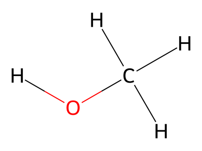

有機分類帽
四層難度遊玩展示版
核心問題：學生看結構式常常只看表面（看到 OH 就選醇、看到 C=O 就選醛），忽略官能基特徵和位置。
解決方案：用四個遞進難度，從「指認類別」→「判斷名稱」→「英文轉換」→「從示性式反推」，反覆訓練辨識直覺。
四層難度展示
層次 1：官能基類別辨識（初級）
初級 Beginner題目：看結構式，選官能基

四個選項：
✓ 醇
醛
烷
醚
教學目的：學生先學會「看圖找官能基」。不考分子名稱，只看 -OH、C=O、C=C 等特徵。
層次 2：分子名稱判斷（中級）
中級 Intermediate題目：同一張結構式，選分子名稱
四個選項：
✓ 甲醇
乙醇
甲醛
甲烷
教學目的：學生進階到「看結構判斷具體分子」。同樣的圖，難度從「有什麼官能基」升級到「這叫什麼分子」。
層次 3：英文術語轉換（高級）
高級 Advanced題目：同一張結構式，選英文官能基
四個選項：
✓ Alcohol
Aldehyde
Alkane
Ether
教學目的：連結中英文術語。同一個辨識能力，用英文重新測試，幫助學生把 Alcohol、Aldehyde、Alkene 這些易混英文術語建立對應。
層次 4：示性式推理（未來新增）
未來層次題目：看示性式，選官能基類別
CH₃OH
答案 + 類別簡介：
✓ 醇
醇：含有 -OH 官能基。氧原子一邊接氫、一邊接碳鏈。常作為溶劑、燃料、消毒劑。
教學目的：從「看圖」升級到「看簡化式」。訓練學生從最簡潔的分子表示法直接推理官能基。同時展示官能基的性質與用途。
遊戲關卡與分子範圍
依教學順序排列。先從純碳架開始（零難度），再進入含氧化合物（教學難點）。
L1
碳氫骨架基礎
包含官能基： 烷 烯 炔 芳香烴
烷類：
甲烷、乙烷、丙烷、丁烷、環己烷
烯類：
乙烯、丙烯、1-丁烯、環己烯
炔類：
乙炔、丙炔、1-丁炔
芳香烴：
苯、甲苯、苯乙烯、二甲苯、萘
教學重點：純碳骨架，不涉及其他原子。學生先建立「單鍵、雙鍵、三鍵、苯環」的視覺辨識。
L2
單鍵氧家族
⚠ 教學難點開始
包含官能基： 醇 醚
醇 (-OH)：
甲醇、乙醇、丙醇、2-丙醇、乙二醇、甘油、苯甲醇
醚 (C-O-C)：
二甲醚、二乙醚、乙基甲基醚、苯甲醚
教學重點：第一次出現「同一個原子（氧）但官能基不同」的情況。
易混點：學生常把「醇」和「醚」搞反。關鍵是看「氧是否接氫」。
易混點：學生常把「醇」和「醚」搞反。關鍵是看「氧是否接氫」。
L3
雙鍵氧家族
⚠⚠ 教學難點核心
包含官能基： 醛 酮
醛 (C=O 末端)：
甲醛、乙醛、丙醛、丁醛、苯甲醛
酮 (C=O 中間)：
丙酮、丁酮、2-戊酮、環己酮、苯乙酮
教學重點：同樣都有 C=O，但位置不同。
易混點：這是最常見的錯誤題型。學生容易只看到氧、忽略位置。
解法：重點強調「看 C=O 在分子的哪裡」。
易混點：這是最常見的錯誤題型。學生容易只看到氧、忽略位置。
解法：重點強調「看 C=O 在分子的哪裡」。
L4
雙氧複合
包含官能基： 羧酸 酯
羧酸 (-COOH)：
甲酸、乙酸、丙酸、丁酸、草酸、苯甲酸
酯 (-COO-)：
甲酸甲酯、乙酸乙酯、乙酸甲酯、丁酸乙酯、苯甲酸甲酯
教學重點：區分 -COOH（有 H）與 -COO-（無 H）。
生活連結：乙酸（醋）、乙酸乙酯（水果香氣）。
生活連結：乙酸（醋）、乙酸乙酯（水果香氣）。
L5
雜原子與鹵素
包含官能基： 胺 鹵化物
胺 (-NH₂, -NR)：
甲胺、乙胺、二甲胺、三甲胺、苯胺
鹵化物 (F/Cl/Br/I)：
氯甲烷、溴乙烷、氯仿、氯乙烯、氯苯
教學重點：引入新原子（N、X）。大部分學生此時已掌握基礎，難度相對較低。
L6
綜合挑戰
包含：Level 1～5 全部官能基混合 + 酚類
酚 (Ar-OH)：
苯酚、鄰-甲酚、間-甲酚、對-甲酚
教學重點：測試學生的綜合辨識能力。不能靠「關卡提示」，必須真的看結構判斷。
陷阱
苯環陷阱關
全部題目都是苯環衍生物
題目範圍：
苯酚、苯甲醇、苯甲醛、苯甲酸、苯胺、氯苯、苯乙烯、甲苯、乙苯、萘等
教學重點：打破「看到苯環就選芳香烴」的陷阱。
同一分子都含苯環，但官能基可能是醇、醛、酸、胺等任何東西。學生必須看苯環上接了什麼。
同一分子都含苯環，但官能基可能是醇、醛、酸、胺等任何東西。學生必須看苯環上接了什麼。
進階
英文術語挑戰
形式：全題庫（所有分子），選項改為英文官能基
教學重點：把中文辨識能力轉成英文術語。
Alkane、Alkene、Alkyne、Alcohol、Aldehyde、Ketone、Carboxylic Acid、Ester、Ether、Amine、Aromatic、Halide、Phenol
Alkane、Alkene、Alkyne、Alcohol、Aldehyde、Ketone、Carboxylic Acid、Ester、Ether、Amine、Aromatic、Halide、Phenol
下一步
1. 打開遊戲本體，親身體驗 Level 2 和 Level 3（教學難點）。
2. 告訴我：分類對不對、是否符合你的課本用語、有什麼課本內容一定要加。
版本：2026-07-11 | 適用版本：Organic Sorting Hat v2